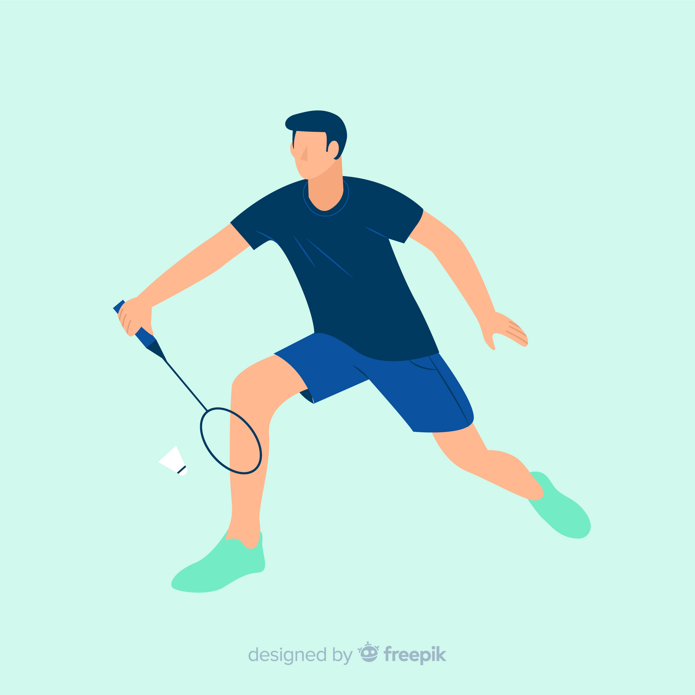

Hobby
Saya sangat senang mendengarkan musik dimanapun dan kapanpun,karena mendengarkan musik adalah hal yang paling menyenangkan untuk dilakukan.
Saya merasa tenang,nyaman,dan damai bila saat mendengarkan musik.secara tak langsung dapat mempunyai kita.
Jadi musik menurut saya,bisa menjadi alternatif untuk menghilangkan stres atau kejenuhan.
Dengan musik suasana bisa menjadi lebih berwarna,
Semua orang pasti suka musik dan tergantung genre apa yg disuka.
Musik itu memiliki genre bermacam -macam seperti pop, rock, klasik, blues, metal dan lain-lain.
Semua genre musik tersebut bisa didengarkan tergantung suasana hati atau musik kesukaan kita.
Minat
Saya memiliki minat pada web development karena alasan yang pertama, peluang kerja web developer terbuka sangat lebar. Di zaman serba digital seperti sekarang, kehadiran web developer tidak hanya sebagai pembuat web namun juga sebagai pemelihara sistem agar tetap berjalan lancar.
Yang kedua adalah dibutuhkan oleh banyak perusahaan. Mulai dari start up hingga perusahaan yang sudah berjaya puluhan tahun, membutuhkan web developer agar tetap eksis di zaman sekarang.
Olahraga Favorit

Alasan kenapa saya menyukai bermain badminton adalah olahraga badminton ini sangat menyenangkan,seru dan permainan badminton juga tidak sulit.
Selain itu bermain badminton memiliki beberapa manfaat diantaranya mampu mengurangi risiko terhadap sejumlah masalah kesehatan, seperti tekanan darah tinggi, diabetes, hingga obesitas. Badminton juga dapat membuat kita terhindar dari berbagai penyakit berbahaya, meningkatkan kolesterol baik, dan mengurangi risiko penyumbatan pembuluh darah.